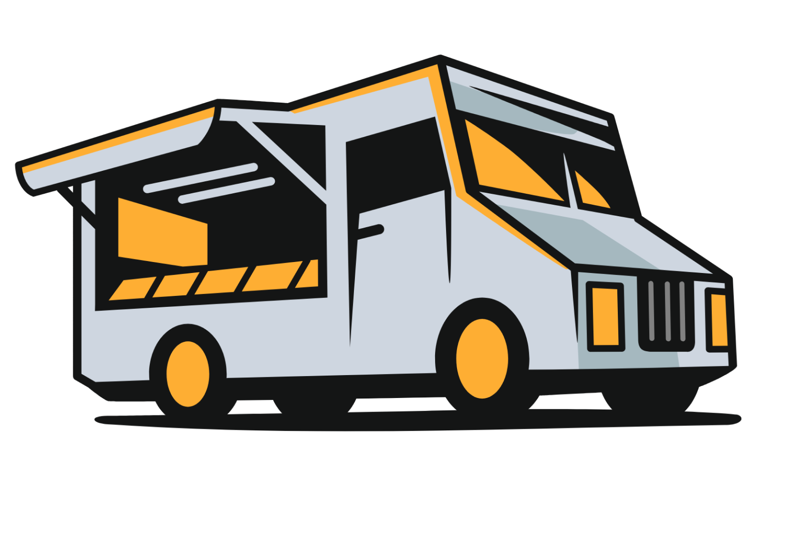
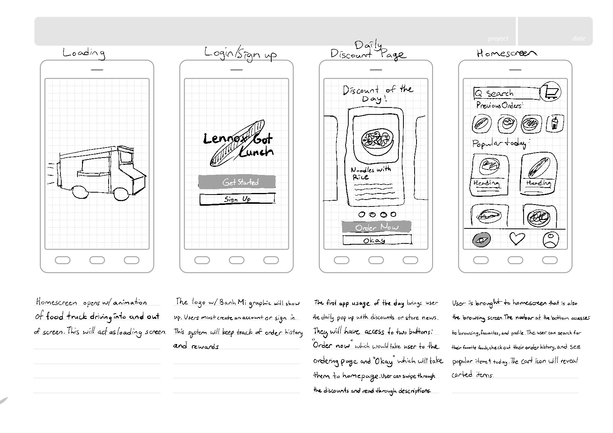
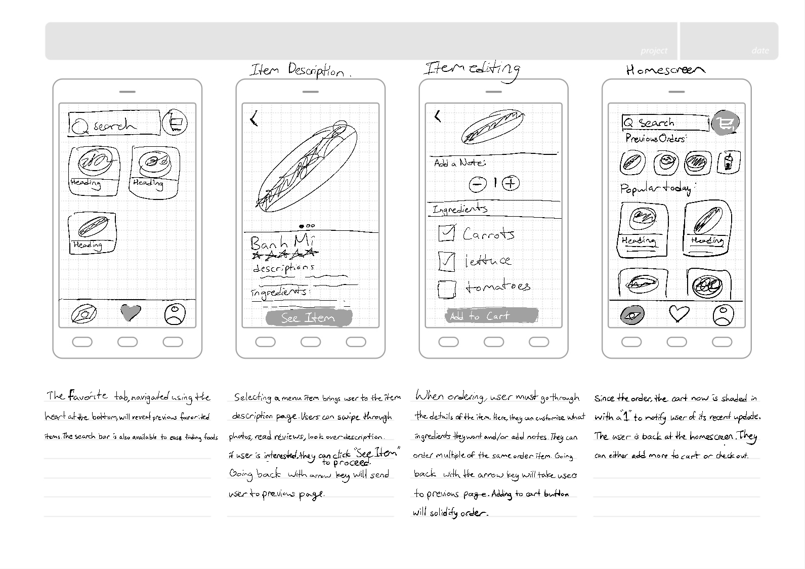
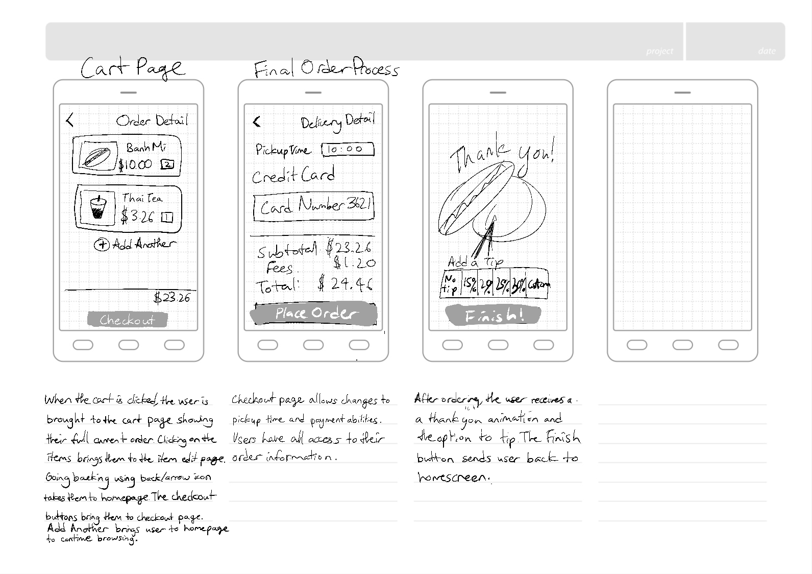
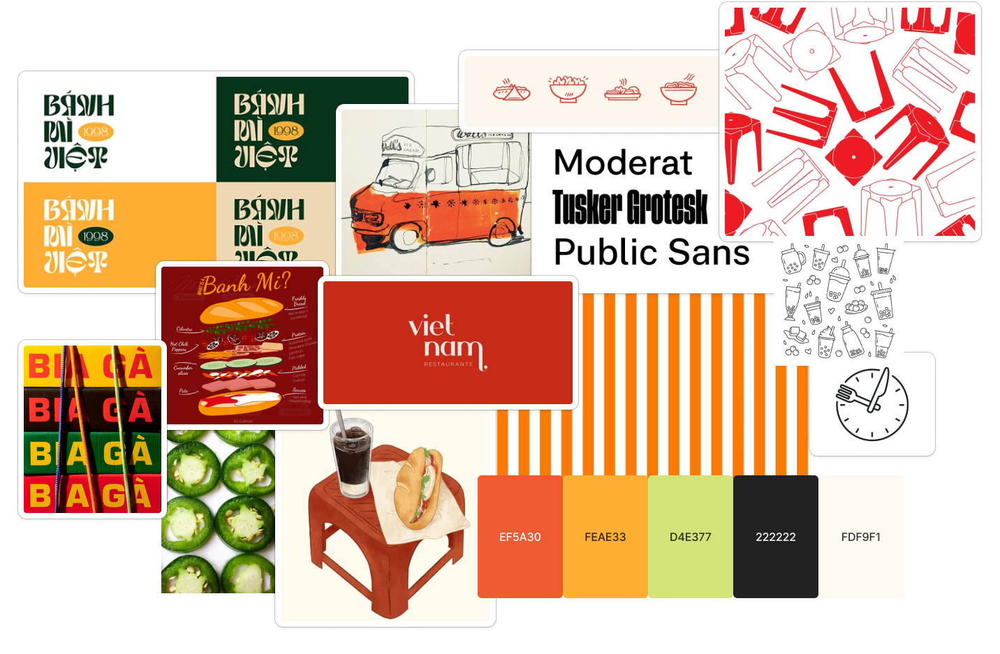
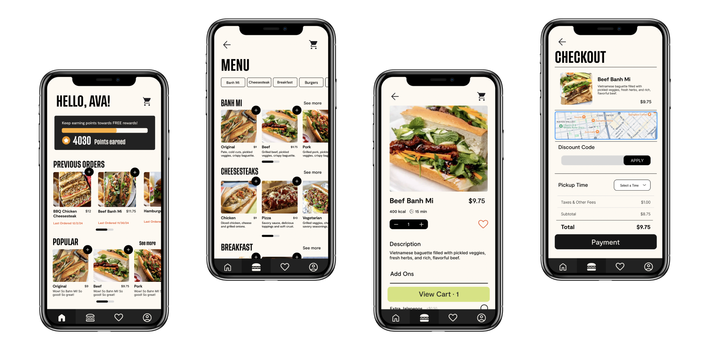
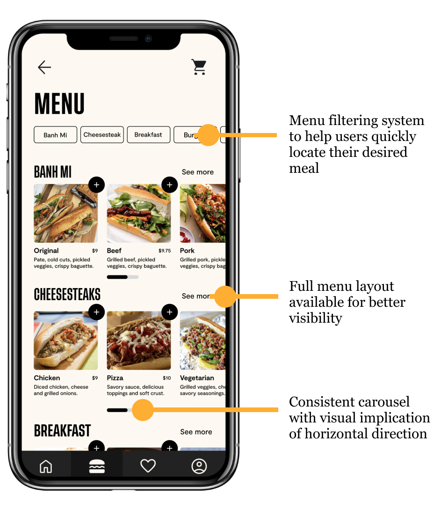

Lennox Got Lunch
UI/UX DesignUX ResearchUser TestingBranding
Project Overview
Making campus food trucks more accessible and efficient.
The Overview
Cheap and delicious, the food trucks around Drexel campus are often the university students’ most accommodating food options. For this project, we created a mobile app to make food trucks more accessible and efficient.
The Problem Statement
Lennox Got Lunch serves a diverse customer base, including college students, university staff, and nearby workers, all of whom need quick, efficient service during their busy schedules. The goal was to design a mobile app that would reduce wait times, simplify the ordering process, and provide features such as real-time order tracking and personalized user experiences.
The Goals
- Develop an app for faster and more efficient food ordering.
- Provide real-time order updates and menu availability.
- Simplify meal customization with intuitive controls.
- Enable personalized features like saving favorite orders.
The Design Process
Research
Observations and interviews to understand customer pain points and behavior.
Wireframe
Paper prototypes and low-fidelity wireframes to test navigation.
Brand
Moodboard and branding rooted in the food truck’s Vietnamese culture.
Refine
High-fidelity design shaped by usability testing feedback.
Learning from Customers
Our process began with user research, including observations and interviews to understand customer pain points and behavior. Key insights shaped our decisions, emphasizing fast service, easy customization, and a straightforward checkout process.

Paper Prototype & Low-Fidelity Wireframes
Next, we moved on to paper prototypes and low-fidelity wireframes to begin visualizing the user interface and layout. At this stage, the focus was on structure rather than detailed design. Our paper prototypes allowed us to quickly test and iterate on ideas. We would sketch basic wireframes and test them with each other to make sure the app’s navigation was intuitive.



Moodboard & Branding
Our mood boards and branding decisions were integral to making the app feel both functional and visually appealing. Based on our research, we wanted the app’s aesthetic to feel modern, vibrant, and reflective of the food truck’s Vietnamese culture. We used warm colors like red, orange, and yellow, which are associated with Vietnamese culture, with modern, minimalistic typography for clarity and cultural connection.

High-Fidelity Wireframes
During the last step of our process, the high-fidelity changes reflect the key feedback from usability testing and provide a more seamless, user-friendly ordering experience.

Clearer Menu Navigation
Based on our usability testing results, users found the mid-fidelity menu categorization to be unclear. The navigation was simplified to make it easier for users to find and order their Beef Banh Mi.

Key Refinements
Customization
To improve customization and ordering, we implemented button-based options that allow users to make intuitive meal adjustments. We also made tipping selections more accessible and gave users the ability to set quantities to 0 for better control and clarity over their order. These refinements were made based on user feedback that showed a preference for clear and simple customization options.
Payment & Checkout
In the payment and checkout process, we simplified the flow by adding payment-specific pop-ups, clearer card input instructions, and a message about points. These updates ensure that the checkout process is straightforward, reducing confusion and streamlining the final steps of the ordering process.
These additions expand the app’s offerings and allow users to complete their orders more smoothly without unnecessary detours.
Final Prototype
While the core design elements of the screens were stylized at the beginning of the project, the prototype became widely more functional after the usability testing.
Takeaways
This final design showcases how thoughtful planning and user-focused problem-solving can benefit both customers and businesses. Although this project was based on merely a prompt, it introduced me to my first collaborative UX project. I learned to refine designs based off of usability testings and to enhance interacting features.